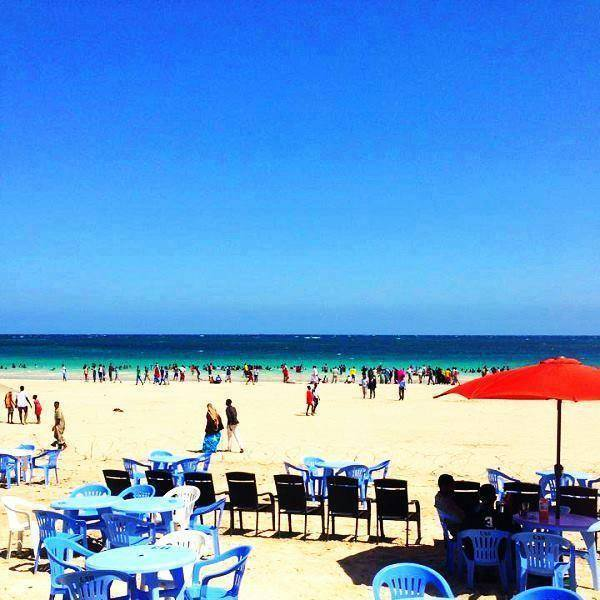

Liido
Xeebta dadku ku nasto, woqooyiga magaalada.

Caasimadda
Muqdisho waxay ku taal xeebta Badweynta Hindiya. Liido waa meesha dadku ku socdaan, kalluunkuna ka yimaado suuqa subaxa. Suuqa Bakaaraha waa xididka ganacsiga magaalada.
Xiga: HargeysaXeebta dadku ku nasto, woqooyiga magaalada.
Suuqa weyn ee ganacsiga Muqdisho.
Masjidka weyn ee Muqdisho.